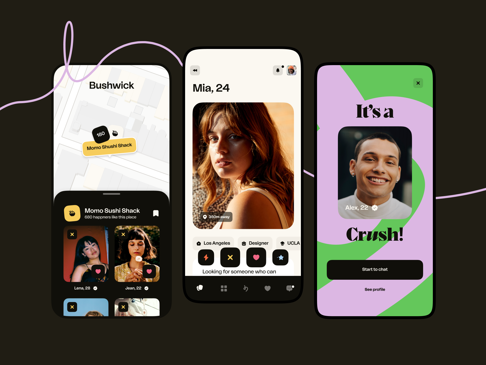
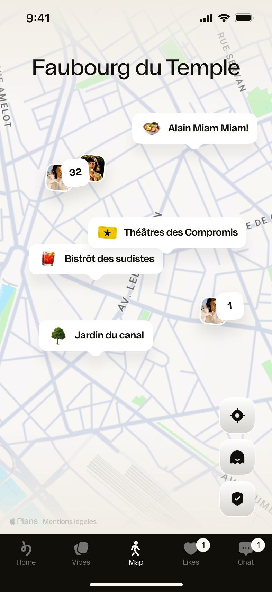
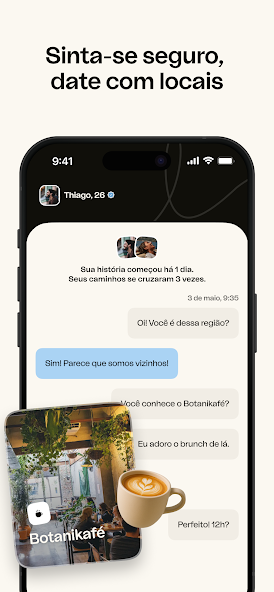
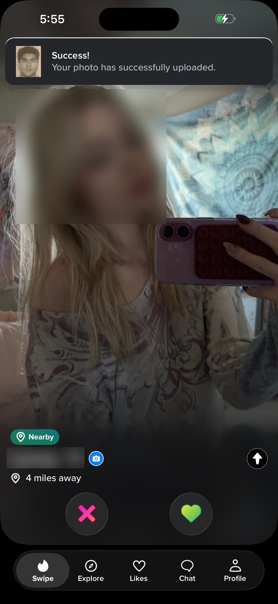
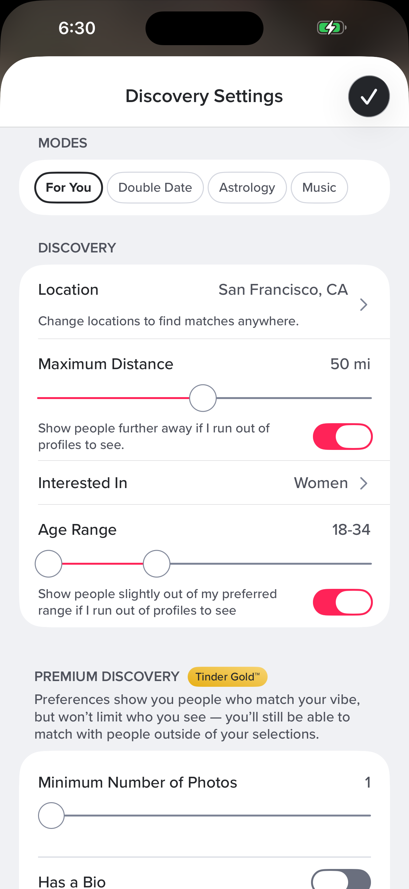
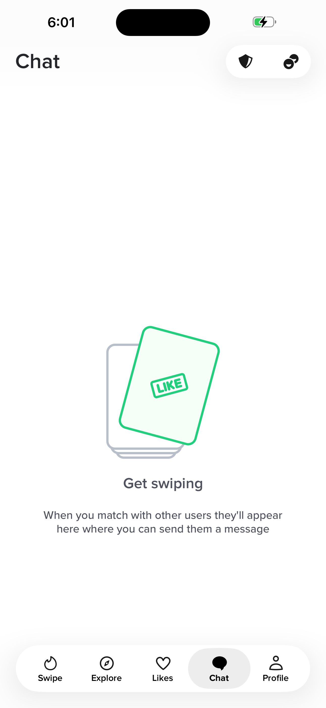

Telas com destino.
Retorno com contexto.
A referência precisa mostrar o que acontece depois do toque. Aqui estão as imagens examinadas, o que elas comprovam e o mapa de navegação proposto para o Trelelê.
Uma tarefa, do começo ao fim
O mapa representa decisões de produto. A região do protótipo é fictícia: não localizamos pessoas, não calculamos cruzamentos e não usamos GPS.
Experimentar Por perto →Qual tela leva a qual tela
| Tela | O que acontece | Próximo destino | Voltar |
|---|---|---|---|
| T01Para você | Um perfil por vez; tocar muda o livro. | Abrir pessoa → T03; curtir recíproco → match. | Ao voltar do perfil, mantém pessoa e livro. |
| T02Por perto | Quadro de pessoas na cidade do teste. | Tocar uma pessoa → T03. Não curte automaticamente. | Ao voltar, mantém o quadro e a posição de leitura. |
| T03Pessoa | Perfil completo, livros e opiniões. | Livro expande aqui; curtir confirma ou dá match; passar remove. | Retorna a Para você, Por perto, Curtidas ou à conversa de origem. |
| T04Curtidas | Interesse recebido e enviado. | Tocar pessoa → T03; reciprocidade → match. | A origem da lista fica preservada. |
| T05Conversas | Novos matches e conversas iniciadas. | Tocar pessoa → T06. | A aba sempre abre a caixa, sem esconder uma conversa ativa. |
| T06Conversa | Histórico, mensagem, segurança e escolha da foto. | Nome → T03; enviar continua na conversa. | Retorna à caixa; abrir perfil e voltar mantém rascunho e leitura. |
| T07Meu perfil | Apresentação própria e preferências. | Editar → T08. | Volta à raiz anterior quando houver histórico. |
| T08Editar perfil | Apresentação, livros e escolhas. | Salvar aplica a mudança; cancelar descarta a seleção em aberto. | Concluir retorna a Meu perfil. |
O match é uma confirmação transitória: conversar abre a thread; continuar mantém a descoberta. A foto só pode aparecer após elegibilidade e escolha dos dois, nunca por abrir um perfil.
Imagens examinadas
Referências visuais de pesquisa, separadas dos perfis fictícios do Trelelê. Toque na imagem para abrir o arquivo. Cada legenda informa o alcance da evidência.

Grade → perfil → match
Composição histórica atribuída ao Happn Design. A grade tem duas colunas; o perfil e o match são superfícies distintas. Não comprova a versão atual.
Abrir fonte ↗
Mapa e agrupamentos
Imagem da ajuda oficial atualizada em 15/10/2026. Mostra agrupamentos e lugares; a documentação explica a passagem para os perfis.
Abrir fonte ↗
Conversa com contexto
Peça promocional da loja. Mostra conversa e referência a um lugar; não revela todos os controles da tela operacional.
Abrir fonte ↗
Cartão de descoberta
Captura independente publicada pelo Revyl. Decisão e abertura do perfil são ações distintas; data e versão da captura não informadas.
Abrir fonte ↗Perfil completo
Captura independente: perfil rolável com informações e ações de decisão. Rostos e nomes já estão desfocados na fonte.
Abrir fonte ↗
Preferências em painel
Captura independente: filtros abrem em painel sobre a descoberta, sem trocar a raiz do aplicativo.
Abrir fonte ↗
Caixa de conversas vazia
Captura independente da aba Chat em estado vazio. Não é evidência de uma conversa preenchida.
Abrir fonte ↗O que foi analisado e o que falta
Foram examinadas capturas públicas, ajuda oficial, imagens fornecidas pelo usuário e código de implementações abertas. Não houve acesso ao código interno ou às contas autenticadas de Happn e Tinder. As capturas não cobrem todas as versões, experimentos e mercados.